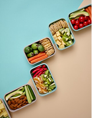
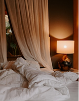

숨결록이
당신의 마음
을 지켜줄게요
안정 SOS 키트
호흡하기
4초 들이마시고
7초 멈췄다가
8초 내쉬어요
주변 색 찾기
눈에 보이는 색 5가지를
천천히 찾아보세요
두드리기
가볍게 손끝으로
어깨/쇄골을 톡톡
시각 스캔
앞에 보이는 5가지를
차분히 관찰해요
불안에서 벗어나는 작은방법
작은 루틴 유지하기
아침 스트레칭, 물 한잔처럼 작은 루틴이
불안을 낮추는 데 도움이 돼요.
불안 신호 기록하기
언제/어디서/어떤 생각이 올라오는지
가볍게 메모해보세요.
전문가 도움
혼자 버티기 힘들면 전문가 도움을 받는 건
아주 자연스러운 선택이에요.
몸을 이완시키기
목/어깨를 천천히 돌리고 숨을 길게 내쉬며
몸의 긴장을 풀어봐요.

불안에 좋은 음식들

마음을 안정시키는 환경
마음이 쉬어가는 음악
우리 사랑은
찰리빈맥스
0:00
0:00
홈
안정
기록
커뮤니티
MY